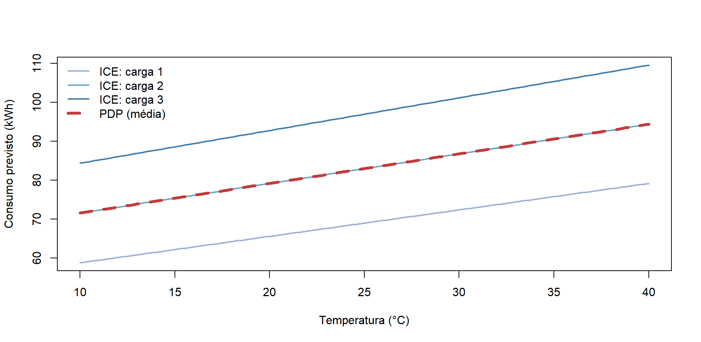

Parte I: Aprendizado Supervisionado
Decisão, Avaliação e Interpretabilidade
Da predição à decisão
Em classificação, o modelo pode fornecer uma classe, um escore ou uma probabilidade estimada. Uma decisão prática exige um passo adicional: escolher qual ação tomar diante dessa informação.
- Predição: o que o modelo estima sobre a observação?
- Decisão: qual ação minimiza a perda ou atende às restrições?
- Avaliação: quais erros e consequências são relevantes?
- Interpretação: como o modelo chegou às suas previsões?
\[\boxed{\text{Predizer}\;\longrightarrow\;\text{Decidir}\;\longrightarrow\;\text{Avaliar}\;\longrightarrow\;\text{Interpretar}}\]
Notação para classificação binária
Considere \(Y\in\{0,1\}\) e um vetor de características \(\mathbf X\).
- Classe positiva: \(Y=1\); classe negativa: \(Y=0\).
- Probabilidade verdadeira: \(\eta(\mathbf x)=P(Y=1\mid\mathbf X=\mathbf x)\).
- Probabilidade estimada: \(\widehat\eta(\mathbf x)\), produzida pelo modelo ajustado.
- Escore: número produzido pelo classificador para ordenar observações; nem todo escore é uma probabilidade calibrada.
A regra \(\widehat g_c(\mathbf x)=I\{\widehat\eta(\mathbf x)\ge c\}\) converte a probabilidade estimada em uma classe prevista.
Por que o cutoff de 50% aparece?
Se os dois tipos de erro têm a mesma perda (perda 0-1), os riscos condicionais de prever cada classe são:
\[R(1\mid\mathbf x)=1-\eta(\mathbf x),\qquad R(0\mid\mathbf x)=\eta(\mathbf x)\]
A regra de Bayes prevê a classe de menor risco:
\[R(1\mid\mathbf x)<R(0\mid\mathbf x)\quad\Longleftrightarrow\quad\boxed{\eta(\mathbf x)>0{,}5}\]
Interpretação: com custos simétricos, a classe positiva é escolhida quando é mais provável que a negativa.
Mesmo a melhor regra pode cometer erros
Quando as classes se sobrepõem, pode haver incerteza mesmo conhecendo a probabilidade verdadeira \(\eta(\mathbf x)\).
Sob perda 0–1, o menor erro condicional possível é \(\min\{\eta(\mathbf x),1-\eta(\mathbf x)\}\). O erro de Bayes é:
\[\boxed{R^*=\mathbb E\!\left[\min\{\eta(\mathbf X),1-\eta(\mathbf X)\}\right]}\]
Exemplo: se \(\eta(\mathbf x)=0{,}30\), prever classe 0 implica probabilidade de erro de 30%; prever classe 1 implica 70%. O menor erro possível nesse perfil é 30%.
Observação: nem um classificador ideal elimina toda a incerteza quando há sobreposição entre as classes.
Perdas assimétricas: erros com consequências diferentes
Em muitos problemas, falso positivo (FP) e falso negativo (FN) têm custos distintos. A escolha do cutoff deve refletir essas perdas.
| Classe verdadeira | Prever 0 | Prever 1 |
|---|---|---|
| \(Y=0\) | \(0\) | \(C_{FP}\) |
| \(Y=1\) | \(C_{FN}\) | \(0\) |
Aqui consideramos, por simplicidade, perda zero para decisões corretas e custos positivos constantes para os dois tipos de erro.
Perdas assimétricas: erros com consequências diferentes
Exemplo: em manutenção preditiva, um alarme falso pode gerar inspeção desnecessária (\(C_{FP}=\text{R\$ }200\)), enquanto deixar de detectar uma falha pode custar R$ 2.000 (\(C_{FN}\)).
Pergunta: por que o cutoff de 50% pode ser inadequado quando \(C_{FN}\ne C_{FP}\)?
Regra de decisão com perdas assimétricas
Para probabilidades condicionais verdadeiras e a matriz de perdas anterior:
\[R(1\mid\mathbf x)=C_{FP} \times [1-\eta(\mathbf x)],\qquad R(0\mid\mathbf x)=C_{FN} \times \eta(\mathbf x)\]
Escolhemos a classe 1 quando \(R(1\mid\mathbf x)<R(0\mid\mathbf x)\):
\[\boxed{\eta(\mathbf x)>c^*=\frac{C_{FP}}{C_{FP}+C_{FN}}}\]
Interpretação: quanto maior o custo do falso negativo em relação ao falso positivo, menor o cutoff teórico.
Hipóteses: custos constantes, decisões corretas sem perda, duas ações possíveis e probabilidades bem calibradas. Com outras perdas ou restrições, a regra muda.
Aplicação: custos e decisão de inspeção
Considere \(C_{FP}=\text{R\$ }200\) e \(C_{FN}=\text{R\$ }2.000\). O cutoff teórico é:
\[c^*=\frac{200}{200+2000}\approx0{,}091\]
Para um equipamento com probabilidade estimada de falha \(\widehat\eta=0{,}30\):
| Decisão | Custo esperado estimado |
|---|---|
| Prever positivo / inspecionar | \(200\times0{,}70=\text{R\$ }140\) |
| Prever negativo / não inspecionar | \(2000\times0{,}30=\text{R\$ }600\) |
Resultado: sob essas hipóteses e com essa correspondência entre classe e ação, inspecionar tem menor custo esperado.
O cutoff é uma escolha operacional
Um classificador fornece uma pontuação ou probabilidade. O cutoff transforma essa informação em uma classe:
\[\widehat g_c(\mathbf x)=I\{\widehat\eta(\mathbf x)\geq c\}\]
- Reduzir \(c\): mais casos são classificados como positivos; tende a aumentar a sensibilidade e também os falsos alarmes.
- Aumentar \(c\): menos casos são positivos; tende a reduzir os falsos alarmes, mas pode deixar passar eventos relevantes.
Distinção: mudar \(c\) não exige necessariamente treinar novamente o modelo. A escolha do cutoff deve refletir os custos, as restrições operacionais e o desempenho estimado em validação.
Matriz de confusão: definição geral
Depois de escolher o cutoff, comparamos a classe prevista \(\widehat Y\) com a classe verdadeira \(Y\).
| Classe verdadeira | \(\widehat Y=1\) | \(\widehat Y=0\) |
|---|---|---|
| \(Y=1\) | Verdadeiro positivo (VP) | Falso negativo (FN) |
| \(Y=0\) | Falso positivo (FP) | Verdadeiro negativo (VN) |
- VP e VN: decisões de classificação corretas.
- FP e FN: dois tipos diferentes de erro.
Matriz de confusão: exemplo
Exemplo: considere um conjunto de avaliação com 1.000 observações, das quais 100 pertencem à classe positiva e 900 à classe negativa. Um classificador identifica corretamente 80 observações positivas e 810 negativas, produzindo 20 falsos negativos e 90 falsos positivos.
| Classe verdadeira | Previsto: \(\hat Y=1\) | Previsto: \(\hat Y=0\) | Total |
|---|---|---|---|
| \(Y=1\) (positiva) | 80 (VP) | 20 (FN) | 100 |
| \(Y=0\) (negativa) | 90 (FP) | 810 (VN) | 900 |
| Total | 170 | 830 | 1.000 |
Sensibilidade, especificidade e precisão
Cada métrica responde a uma pergunta distinta, independentemente da aplicação.
| Métrica | Definição | Pergunta |
|---|---|---|
| Sensibilidade (Recall, TPR) | \(\dfrac{VP}{VP+FN}\) | Entre os positivos reais, quantos foram identificados? |
| Especificidade (TNR) | \(\dfrac{VN}{VN+FP}\) | Entre os negativos reais, quantos foram identificados? |
| Precisão (Precision, PPV) | \(\dfrac{VP}{VP+FP}\) | Entre os previstos como positivos, quantos eram positivos? |
Exemplo: com VP = 80, FN = 20, FP = 90 e VN = 810, obtemos sensibilidade de 80%, especificidade de 90% e precisão de aproximadamente 47%.
Acurácia e F1: o que cada resumo esconde?
No mesmo exemplo:
\[\text{Acurácia}=\frac{VP+VN}{n}=\frac{80+810}{1000}=89\%\]
\[F_1=\frac{2\cdot\text{Precisão}\cdot\text{Recall}}{\text{Precisão}+\text{Recall}}\approx59{,}3\%\]
Acurácia e F1: interpretação e limitações
- Acurácia considera a proporção total de acertos; pode ser dominada pela classe majoritária.
- F1 combina precisão e recall, mas não incorpora explicitamente verdadeiros negativos nem custos monetários.
Conclusão: escolha métricas em função da decisão que será tomada, e não apenas porque são usuais.
Desbalanceamento: 98% de acurácia pode ser inútil
Imagine 10.000 equipamentos, dos quais apenas 200 falharão (2%).
Um classificador que sempre responde “não falhará” acerta 9.800 casos:
\[\text{Acurácia}=\frac{9800}{10000}=\boxed{98\%}\]
Entretanto, ele não identifica nenhuma das 200 falhas:
\[\text{Sensibilidade}=0\%\]
Desbalanceamento: além da acurácia
A balanced accuracy atribui peso igual às duas classes:
\[\text{Balanced Accuracy}=\frac{\text{Sensibilidade}+\text{Especificidade}}{2}=50\%\]
Observação: uma acurácia elevada pode simplesmente refletir a prevalência da classe majoritária.
A acurácia balanceada mede o desempenho médio do classificador nas duas classes, evitando que a classe majoritária domine a avaliação.
Entretanto, ela não substitui todas as outras métricas. Em problemas com custos assimétricos, ainda precisamos analisar sensibilidade, especificidade, precisão e as consequências dos diferentes tipos de erro.
ROC: avaliar todos os cutoffs
A curva ROC descreve como o classificador troca detecção de positivos por falsos alarmes quando variamos o cutoff.
- Eixo horizontal: \(FPR=1-\text{Especificidade}\).
- Eixo vertical: \(TPR=\text{Sensibilidade}\).
Cada ponto da curva corresponde a um cutoff. Um bom classificador tende a produzir valores altos de TPR com valores baixos de FPR.
Atenção: ROC avalia a capacidade de discriminação ao longo dos cutoffs, mas não determina qual deles minimiza o custo da decisão.
Como o cutoff altera a classificação?

Como interpretar o movimento na ROC?
Interpretação:
- Cutoff alto: menos observações classificadas como positivas.
- Cutoff baixo: aumentam a sensibilidade e a taxa de falsos positivos.
- AUC constante: o poder de discriminação do modelo não muda.
Conclusão: escolher o cutoff significa selecionar um ponto operacional da curva ROC, considerando os custos dos erros.
AUC: uma medida de ordenação
A área sob a curva ROC (AUC) resume a capacidade do classificador de atribuir escores maiores às observações positivas do que às negativas, considerando todos os cutoffs.
Uma interpretação probabilística é:
\[ \boxed{ \mathrm{AUC} = P(S_1>S_0)+\frac{1}{2}P(S_1=S_0) } \]
em que:
- \(S_1\): escore de uma observação da classe positiva (\(Y=1\))
- \(S_0\): escore de uma observação da classe negativa (\(Y=0\))
AUC: interpretação probabilística
Os escores devem ser orientados de modo que valores maiores indiquem maior evidência da classe positiva.
Exemplo: AUC = \(0{,}91\) significa que, ao selecionar aleatoriamente uma observação positiva e outra negativa, o classificador apresenta 91% de concordância na ordenação, contando empates com peso de 50%.
Atenção: AUC = \(0{,}91\) não significa 91% de acertos nas classificações. A AUC mede a qualidade da ordenação produzida pelo classificador; a acurácia mede a qualidade das classificações após a escolha de um cutoff.
Por isso, a AUC é útil para avaliar a capacidade discriminatória do modelo, enquanto a escolha do cutoff deve considerar também os custos dos erros, a prevalência das classes e os objetivos da decisão.
Precision–Recall: duas medidas complementares
Em classificação binária, Recall e Precision avaliam aspectos diferentes do desempenho em relação à classe positiva (\(Y=1\)):
\[\boxed{\text{Recall}=\frac{VP}{VP+FN}}\qquad\boxed{\text{Precision}=\frac{VP}{VP+FP}}\]
- Recall: qual fração dos positivos reais foi identificada?
- Precision: qual fração das previsões positivas está correta?
Precision–Recall: duas medidas complementares
A curva Precision–Recall (PR) representa a precisão (eixo vertical) em função do recall (eixo horizontal) para diferentes cutoffs.
Ao reduzir o cutoff, o recall não diminui, mas a precisão pode aumentar ou diminuir conforme os casos incorporados.
Aplicação: quando a classe positiva é rara, a precisão explicita a proporção de alertas que correspondem a eventos reais. A referência de um ranqueamento aleatório depende da prevalência positiva.
Como o cutoff altera a curva Precision–Recall?

Como o cutoff altera a curva Precision–Recall?
Interpretação:
- Ao diminuir o cutoff, o Recall não diminui.
- A Precision pode aumentar ou diminuir.
- A linha tracejada representa a prevalência positiva (15%).
Conclusão: a escolha do cutoff determina o compromisso entre identificar positivos e manter a precisão das previsões.
ROC ou Precision–Recall?
| Questão | ROC | Precision–Recall |
|---|---|---|
| O que enfatiza? | Sensibilidade versus taxa de falsos positivos | Recall versus precisão das previsões positivas |
| Em eventos raros | Pode parecer favorável mesmo com muitos FP em números absolutos | Expõe diretamente a baixa precisão das previsões positivas |
| Escolhe o cutoff? | Não | Não |
Exemplo: se 1% dos casos são positivos, uma taxa de falsos positivos de apenas 5% pode gerar muitos alarmes falsos em relação aos verdadeiros positivos.
Prática recomendada: observar ambas as curvas, a matriz de confusão no cutoff escolhido e, quando possível, o custo esperado da decisão.
Três formas de lidar com classes desbalanceadas
O desbalanceamento pode ser tratado em etapas diferentes do processo:
| Intervenção | O que muda? | Exemplo |
|---|---|---|
| Dados | Composição do treinamento | Oversampling, undersampling, SMOTE |
| Aprendizado | Peso atribuído aos erros | Penalizar mais os falsos negativos |
| Decisão | Regra aplicada à saída | Reduzir o cutoff |
Observação: Essas intervenções não são equivalentes. Reamostrar pode alterar as probabilidades produzidas pelo modelo; mudar o cutoff não altera a pontuação original.
Três formas de lidar com classes desbalanceadas

Cuidado: oversampling ou SMOTE devem ocorrer apenas nos dados de treinamento de cada fold. Aplicá-los antes da validação cruzada provoca vazamento de informação.
Probabilidades e custos: um cuidado adicional
A regra
\[c^*= \dfrac{C_{FP}}{C_{FP}+C_{FN}}\]
é derivada para probabilidades condicionais verdadeiras.
Na prática, o modelo pode produzir escores que não são probabilidades bem calibradas. Por exemplo, entre máquinas com previsão de 80% de falha, a frequência observada pode ser muito menor.
- Verifique discriminação e calibração em dados não utilizados para ajustar o modelo.
- Se usar reamostragem, não presuma que as probabilidades continuam refletindo a prevalência operacional.
- Escolha o cutoff com base em custos e desempenho em validação; avalie uma única vez no teste final.
Discriminar bem, calibrar bem e decidir bem são objetivos relacionados, mas distintos.
Por que combinar classificadores?
Uma combinação de classificadores (ensemble) utiliza previsões de diferentes modelos para construir uma previsão final.
Motivação: modelos distintos podem capturar padrões complementares; a combinação pode reduzir a variabilidade ou compensar parte dos erros individuais.
- Hard voting: combina classes previstas.
- Soft voting: combina escores ou, mais comumente, probabilidades estimadas comparáveis.
Por que combinar classificadores?
Exemplo: três classificadores estimam probabilidades 0,72, 0,64 e 0,40 para a classe positiva de uma mesma observação.
Limite: combinar modelos não garante melhora; erros muito semelhantes podem permanecer.
Hard voting: maioria de votos
Cada classificador produz diretamente uma classe. Com cutoff de 0,5, as previsões do exemplo são:
| Modelo | Probabilidade | Classe |
|---|---|---|
| Logística | 0,72 | 1 |
| Random Forest | 0,64 | 1 |
| SVM calibrada | 0,40 | 0 |
A votação majoritária produz classe 1 (dois votos entre três).
\[\widehat g_{\mathrm{hard}}(\mathbf x)=\operatorname{moda}\{g_1(\mathbf x),\ldots,g_M(\mathbf x)\}\]
Limitação: o método ignora o grau de confiança. Uma previsão de 0,51 conta como um voto tão forte quanto 0,99.
Soft voting: média das probabilidades
Em vez de combinar classes, combinamos probabilidades estimadas:
\[\overline p_1(\mathbf x)=\frac{0{,}72+0{,}64+0{,}40}{3}\approx\boxed{0{,}587}\]
Se aplicarmos cutoff 0,5 à média, a decisão será classe 1.
Vantagem: preserva parte da intensidade das previsões.
Cuidados: as probabilidades devem estar em escalas comparáveis e, idealmente, calibradas; pesos e hiperparâmetros da combinação devem ser escolhidos com dados de treinamento/validação, não com o teste.
Quando a combinação não ajuda?
Imagine três classificadores que cometem exatamente os mesmos erros. A votação não corrige nenhum deles.
Por outro lado, se os modelos capturam aspectos diferentes do fenômeno, seus erros podem se compensar.
Para avaliar uma combinação:
- Compare com o melhor modelo individual em validação.
- Examine o desempenho no cutoff operacional e o custo esperado.
- Evite escolher pesos ou modelos olhando os resultados do conjunto de teste.
Ideia central: diversidade útil e validação adequada importam mais do que simplesmente aumentar o número de classificadores.
Interpretabilidade: que pergunta queremos responder?
Em regressão, o modelo produz uma predição numérica \(\widehat f(\mathbf x)\). Mesmo com baixo erro de teste, podemos querer entender como as entradas influenciam as previsões do modelo.
- Explicação global: como o modelo se comporta, em média, ao variar uma variável?
- Heterogeneidade individual: esse comportamento é semelhante para todas as observações?
- Explicação local: como aproximar a predição de uma observação específica?
Interpretabilidade: que pergunta queremos responder?
Ferramentas: PDP (efeito parcial médio), ICE (curvas individuais) e LIME (aproximação interpretável local).
Exemplo: em um modelo de consumo de energia, podemos investigar a influência preditiva da temperatura, diferenças entre máquinas e uma previsão específica de 120 kWh.
Interpretabilidade não é causalidade
Suponha que o consumo previsto aumente quando elevamos a temperatura no modelo.
Isso não prova que elevar a temperatura causaria aumento de consumo no mundo real. Temperatura, carga e condições operacionais podem estar associadas entre si.
\[\boxed{\text{Comportamento do modelo}\neq\text{efeito causal}}\]
PDP, ICE e LIME descrevem como o modelo ajustado responde a alterações nas entradas. A interpretação causal exigiria hipóteses e estratégias adicionais.
Uma função de regressão para acompanhar os exemplos
Vamos imaginar que um modelo aprendeu uma relação entre temperatura \(T\), carga \(L\) e consumo previsto:
\[\widehat g(T,L)=40+0{,}6T+12L+0{,}08TL.\]
- O termo \(0{,}6T\) representa uma contribuição associada à temperatura.
- O termo \(12L\) representa uma contribuição associada à carga.
- O termo \(0{,}08TL\) cria uma interação: o efeito de variar \(T\) depende de \(L\).
Temos que \(\widehat g\) poderia ser uma Random Forest, uma rede neural ou outro modelo ajustado.
PDP: comportamento médio do modelo
O Partial Dependence Plot (PDP) resume como a predição média do modelo varia quando alteramos uma variável \(X_j\) e mantemos os demais atributos de cada observação como registrados.
Escrevendo \(\mathbf x=(x_j,\mathbf x_{-j})\), estimamos:
\[\boxed{\widehat{PD}_j(t)=\frac1n\sum_{i=1}^{n}\widehat g(t,\mathbf x_{i,-j})}\]
PDP: comportamento médio do modelo
Como construir: para cada valor \(t\), substituímos \(X_j\) por \(t\) em todas as observações, obtemos as previsões e calculamos sua média.
Interpretação: é uma descrição global e média do modelo ajustado, não um efeito causal nem a trajetória de um indivíduo.
Aplicação: fixar a temperatura em diferentes valores e calcular o consumo médio previsto de máquinas com outras características distintas.
PDP: exemplo numérico
Considere três máquinas com cargas \(L=1\), \(2\) e \(3\) e a função
\[\widehat g(T,L)=40+0{,}6T+12L+0{,}08TL\]
Se fixarmos \(T=20\), as previsões serão:
| Carga | Predição (kWh) |
|---|---|
| 1 | 65,6 |
| 2 | 79,2 |
| 3 | 92,8 |
PDP: exemplo numérico
O PDP em \(T=20\) é a média: \((65{,}6+79{,}2+92{,}8)/3=\boxed{79{,}2\text{ kWh}}\)
Repetimos o procedimento para vários valores de temperatura e construímos a curva.
PDP e ICE: duas visões da mesma função

Linhas azuis: previsões de máquinas individuais (ICE). Linha vermelha: média dessas curvas (PDP). A inclinação muda com a carga por causa da interação \(TL\).
ICE: respostas individuais do modelo
O Individual Conditional Expectation (ICE) mostra, para cada observação \(i\), como sua predição varia quando alteramos \(X_j\), mantendo seus outros atributos fixos:
\[\boxed{\widehat{ICE}_{j,i}(t)=\widehat g(t,\mathbf x_{i,-j})}\]
- Curvas quase paralelas sugerem respostas modeladas semelhantes.
- Curvas com inclinações ou formas diferentes sugerem heterogeneidade, possivelmente associada a interações.
- O PDP é a média das curvas ICE calculadas na mesma grade de valores.
ICE: respostas individuais do modelo
Exemplo ilustrativo: máquinas com cargas distintas podem apresentar diferentes inclinações da curva de consumo previsto versus temperatura.
Cuidado: ICE mostra o comportamento do modelo ao modificar entradas, não o efeito causal dessas alterações.
Um cuidado importante: variáveis correlacionadas
Imagine que, nos dados reais, temperaturas muito altas só ocorram quando a carga é elevada.
O PDP pode perguntar ao modelo o que aconteceria com temperatura alta e carga muito baixa, uma combinação praticamente inexistente no treinamento.
A predição é calculável, mas pode ser extrapolação para uma região de baixo suporte dos dados.
Consequência: a curva pode descrever mais o comportamento do modelo fora da região observada do que um padrão sustentado por exemplos reais.
Boa prática: examinar a distribuição conjunta das variáveis e interpretar PDP/ICE com cautela quando houver dependência forte.
LIME: explicação local de uma predição
O LIME (Local Interpretable Model-agnostic Explanations) explica uma previsão individual por meio de um modelo simples que aproxima localmente as previsões de um modelo mais complexo.
Pergunta: quais características ajudam a descrever o comportamento do modelo nas proximidades de uma observação específica \(\mathbf x^*\)?
- O modelo original continua sendo o responsável pela previsão.
- O LIME ajusta uma explicação aproximada e local, não uma nova regra global.
- As contribuições dependem da representação das variáveis, das perturbações e da vizinhança escolhida.
Exemplo ilustrativo: explicar por que o modelo estimou 120 kWh para uma máquina específica, em vez de explicar o consumo médio de todas as máquinas.
LIME passo a passo
Para explicar uma máquina \(\mathbf x^*\):
- Selecionar o caso: a máquina com previsão de 120 kWh.
- Gerar perturbações: criar observações semelhantes, modificando entradas próximas.
- Consultar o modelo: calcular \(\widehat g(\mathbf z_b)\) para cada perturbação.
- Atribuir pesos: dar maior importância a observações mais próximas de \(\mathbf x^*\).
- Ajustar um modelo simples: por exemplo, regressão linear local ponderada.
- Interpretar contribuições: identificar quais características mais influenciam a aproximação naquela vizinhança.
A explicação é local: pode mudar quando escolhemos outra máquina.
LIME: a ideia matemática por trás
O LIME busca uma explicação simples \(q\) que reproduza bem as previsões do modelo complexo perto de \(\mathbf x^*\):
\[\boxed{q^*=\arg\min_{q\in\mathcal G}\left\{\mathcal L(\widehat g,q,\pi_{\mathbf x^*})+\Omega(q)\right\}}\]
- \(\mathcal L\): mede quanto a explicação difere do modelo original nas perturbações.
- \(\pi_{\mathbf x^*}\): atribui pesos maiores a pontos próximos do caso explicado.
- \(\Omega(q)\): penaliza explicações muito complexas.
Compromisso: uma explicação mais simples é mais fácil de comunicar, mas pode perder fidelidade ao modelo original.
Exemplo ilustrativo de uma explicação LIME
Imagine que uma aproximação local ao redor de uma máquina produza as seguintes contribuições para o consumo previsto:
| Componente local | Contribuição estimada |
|---|---|
| Valor de referência da explicação | 90 kWh |
| Temperatura elevada | +18 kWh |
| Carga elevada | +15 kWh |
| Equipamento mais novo | −3 kWh |
| Predição aproximada | 120 kWh |
Leitura: naquela vizinhança, temperatura e carga estão associadas ao aumento da predição, enquanto a característica “equipamento mais novo” atua em sentido contrário.
Por que duas explicações LIME podem diferir?
LIME depende de escolhas metodológicas:
- Como as perturbações são geradas.
- Como a proximidade é medida e ponderada.
- Qual é a complexidade do modelo interpretável.
- Qual é a aleatoriedade utilizada no procedimento.
Se as variáveis são fortemente correlacionadas, perturbações independentes podem produzir combinações pouco plausíveis, problema semelhante ao discutido para PDP.
Boa prática: verificar estabilidade e fidelidade local; uma explicação convincente visualmente não é, por si só, uma explicação confiável.
PDP, ICE e LIME: qual pergunta cada um responde?
| Ferramenta | Escopo | Pergunta principal | Limitação típica |
|---|---|---|---|
| PDP | Global | Como a predição média muda ao variar \(X_j\)? | A média pode ocultar heterogeneidade |
| ICE | Individual (várias curvas) | O efeito modelado varia entre observações? | Muitas curvas podem dificultar a leitura |
| LIME | Local | Como aproximar a previsão de um caso específico? | Sensível às perturbações e à vizinhança |
Nenhuma das três ferramentas estabelece causalidade por si só. Elas descrevem o comportamento de um modelo ajustado.
Como comunicar uma interpretação responsável?
Ao apresentar um PDP, ICE ou LIME em um relatório, informe:
- O que foi previsto: consumo em kWh, risco, preço etc.
- Qual modelo foi explicado: versão e conjunto de dados utilizados.
- Qual pergunta foi respondida: global ou local.
- Qual região dos dados foi examinada: evitar extrapolações inadvertidas.
- Quais limitações permanecem: dependência entre variáveis, estabilidade e ausência de interpretação causal.
Formulação adequada: “O modelo prevê maior consumo quando a temperatura aumenta, em média.”
Formulação inadequada sem evidência causal: “Aumentar a temperatura causa maior consumo.”
–>
EST335 — Semana 13